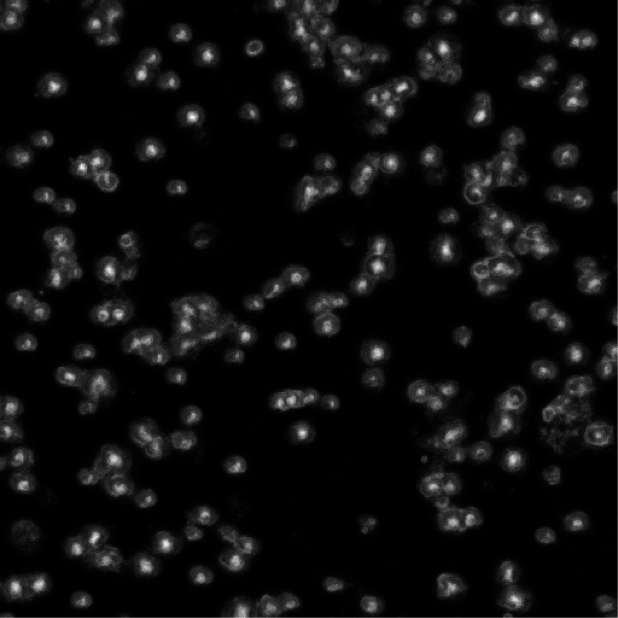

The goal of this practical is for students to examine some of the practical considerations when time-series analysis.
Before getting started please make sure you do the following:
- Open Fiji by typing 'Fiji' into the terminal of the linux workstation. You can find the Terminal by searching for it or by the short-cut: 'Ctrl + Alt + T'
- Goto the weblearn folder entitled: "Doctoral Training Centre (MPLS) Resources / Modules / 2014 / Michaelmas Term / Week 9 - Foundations of Image Analysis / practicals / day4_colocalisation" you will need the files in this folder.
1a) In this practical we are going to visualise and analyse a time-series movie of some cells. Open the image file 'timeseries.tif' You should have an image which looks like this:
1b) If you press the play button the timeseries will play through the image file displaying the images in sequence. Another way to navigate the movie is to use the slider also located at the bottom of the image. If you move the slider at the bottom of the image sequence you should notice that some of the cells in the image stay stationary with respect to the others.
1c) We want to estimate how many cells are stationary in this image over the whole time-sequence. We want to compare it to the approximate number of total cells in the image sequence as well. One way to visualise the cells, which are not moving, is to Z-project the stack. Z-project can be applied in several ways. If you go to 'Images->Stacks->Z-project' you can apply one of the following options: 'Max Intensity', 'Min Intensity', 'Average Intensity', 'Sum Slices'. Use 'Sum Slices' and apply it to the image sequence. 'Sum Slices' takes the sum of all the pixel values in the stack at each pixel (x, y) and flattens it into a single image represenations. If cells are stationary in the image sequence they will appear brightly in this sum image as their lack of movement results in a large sum in these pixels. Other pixels only have cells located there transiently and so have lesser sum overall.
Question) Submit your image to your report. Use a colourful Lookup-Table.
1d) Count the cells. To do this, use the 'SUM_timeseries.tif' image, convert to '8-bit' (Image->Type->8-bit) and use the 'Find Maxima' plugin (Process->Find Maxima). Set the 'NoiseTolerance' parameter to '100' and click 'Preview point Selection'. Make a note of the number of maxima. Make sure you converted to '8-bit' otherwise the 'Noise Tolerance' parameter will not be appropriate and the points of the image won't represent the stationary cells.
Question) Do the points which have been highlighted represent stationary cells ? Investigate the image sequence by eye and make sure this is the case. How many cells according to the 'Find Maxima' plugin appear to be stationary?
1e) Next we want to estimate the number of cells in the first frame of the timeseries. Click the image sequence and move the slider position at the bottom to the first frame. Use the plugin 'Find Maxima' again and estimate how many cells are present in total.
Question) How many cells were there in total? What percentage of cells were moving as opposed to stationary?
(c) Dominic Waithe 2014. University of Oxford.